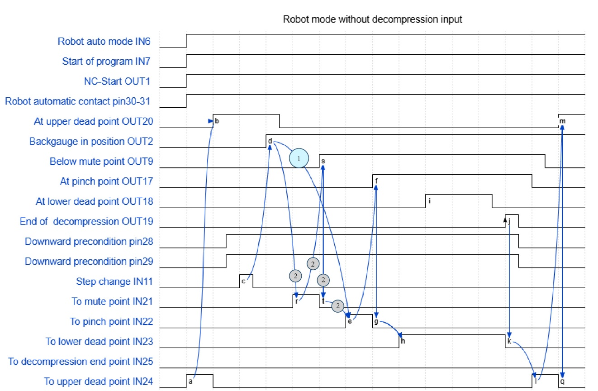

Operating modes
Manual mode
For manual feeding, manual mode must be selected using the key switch. The press brake is controlled with the control desk by this means. During manual mode without BendGuard or another active optoelectronic safety device, the press beam moves with a working speed as the machine data (See machine operators manual). With an active optoelectronic safety device, it can move with a rapid downward speed also as shown in the table below.
| Working speed (closing movement) | Rapid downward movement | |
|---|---|---|
B41 TruBend 1320 |
9 mm/s |
110 mm/s |
B41 TruBend 1225 |
12 mm/s |
170 mm/s |
B41 TruBend 1150 |
14 mm/s |
180 mm/s |
B41 TruBend 1100 |
15 mm/s |
220 mm/s |
B41 TruBend 1060 |
20 mm/s |
180 mm/s |
| Working speed (closing movement) | Rapid downward movement | |
|---|---|---|
B42 TruBend 1320 |
9 mm/s |
110 mm/s |
B42 TruBend 1225 |
10 mm/s |
170 mm/s |
B42 TruBend 1150 |
10 mm/s |
180 mm/s |
B42 TruBend 1100 |
10 mm/s |
220 mm/s |
B42 TruBend 1060 |
10 mm/s |
180 mm/s |
Robot mode
During operation with the robot, the press brake is sheet loaded by the robot. In "TruBend with robot" operating mode, the foot switch must not be removed.
If operating mode "TruBend with robot" is selected, the PRESS BEAM DOWN foot switch is inactive. It is therefore not possible in robot mode to use the PRESS BEAM DOWN foot switch to trigger a downward movement of the press beam.
The PRESS BEAM UP foot switch and the EMERGENCY STOP push-button on the foot switch function continually. The bending program can also be selected, started and stopped manually. The hydraulic system can always be switched on and off manually.


Teach mode
Usually, the bending cell is always working in the auto mode. But when the operator needs to perform certain activities in bending cell, like robot teach-in, press-brake status checking etc., the press brake and the robot needs to move with safety speed. In this case, the bending cell is operating in Teach mode.
The teach mode of the press brake is automatically activated when any of the bending cell’s safety door is opened. This safety door’s signal is passed to press brake via PIN 30 (Robot Automatic Contact 1) and 31 (Robot Automatic Contact 2).
And the teach mode of the press brake can be realized via the following processing sequence:


Auto mode
When the safety doors of the bending cell are all closed, the press brake will automatically switch back to the automatic operation mode with high speed. And the processing sequence is realized as follows: